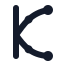
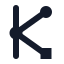
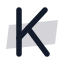

Logo ตัว K: 3 concept
ทุก concept ใช้สีจาก design system เท่านั้น คือหมึก ปากกาน้ำเงิน เส้น margin สีแดง และปากกาเน้นสีเหลือง และมี 4 ไฟล์: สีเต็ม, ขาวดำ, พื้นมืด และ favicon
favicon ไม่ได้ย่อจากตัวใหญ่ แต่วาดใหม่บนตาราง 16×16 ให้เส้นตรงพิกเซล วิธีนี้เรียกว่า optical sizing ซึ่ง logo ของแบรนด์ใหญ่ก็ใช้ ช่อง "16px จริง" วาดลงพิกเซลจริงแล้วขยายให้ดู เพื่อให้เห็นสิ่งที่จะอยู่บนแถบ tab จริงๆ หน้านี้ดูได้ถูกต้องที่สุดใน Chrome
1 · Learning curves
ขาทั้งสองของ K คือกราฟตอน train โมเดล เริ่มจาก epoch เดียวกันบนแกน y (ก้านของ K) โดย accuracy สีปากกาน้ำเงินไต่ขึ้นแล้วค่อยๆ ราบ และ loss สีปากกาแดงดิ่งลงแล้วค่อยๆ ราบ จุดบนเส้นคือ marker ของกราฟ
ความหมายชั้นที่สอง "การเรียนรู้" ทั้งของโมเดลและของคุณ: ลองแต่ละรอบ ผลดีขึ้น ความผิดพลาดลดลง เป็นภาพที่นักศึกษาวิศวะวาดด้วยปากกาสองสีบนกระดาษกราฟจริงๆ จุดแข็ง แปลกใหม่ที่สุด ไม่เหมือนโลโก้ AI แบบ node เชื่อมกันที่เห็นบ่อย ใช้สีของระบบครบ และทุกสีมีความหมาย ข้อควรระวัง เส้นโค้งทำให้เป็นตัว K น้อยกว่าอีกสองแบบเล็กน้อย แบบขาวดำเสียความหมายเรื่องสีขึ้นลง แต่รูปทรงยังบอกได้
ไฟล์ทั้ง 4 แบบ และขนาดเล็ก
สีเต็ม 
ขาวดำ 48 32 24 favicon 32 favicon 16 16px จริง
พื้นมืด 48 32 24 favicon 32 favicon 16 16px จริง
ในบริบทจริง: แถบ tab ของ browser และ navbar
Kulachart Parnduangkeaw LinkedIn
Kulachart Projects Experience Skills
Kulachart Parnduangkeaw LinkedIn
Kulachart Projects Experience Skills
2 · Decision split
K คือ decision tree ขนาดเล็ก ข้อมูลไหลลงก้าน มาถึง node ตัดสินใจสีปากกาน้ำเงิน แล้วแยกเป็นสองกิ่ง ใบปลายกิ่งเป็น ● และ ■ ซึ่งเป็นสัญลักษณ์หมวด ML / DL และ Data ของ design system เอง
ความหมายชั้นที่สอง วิธีคิดแบบ data science: แตกปัญหาออกเป็นทางเลือก แล้วตัดสินจากข้อมูล กิ่งทั้งสองเป็นรูป < ของ tag ในโค้ด จึงสื่อด้าน full-stack ได้ด้วย จุดแข็ง เป็นตัว K ชัดที่สุดในทุกขนาด และรูปทรงเรขาคณิตเรียบ ผูกกับสัญลักษณ์หมวด ● ■ ของระบบ ใช้ซ้ำในเว็บได้ ข้อควรระวัง โลโก้แบบ node กับเส้นเชื่อมพบบ่อยในบริษัท AI จึงเด่นน้อยกว่า favicon เหลือแค่ node ที่ข้อต่อ ใบปลายกิ่งเล็กเกินจะเห็น
ไฟล์ทั้ง 4 แบบ และขนาดเล็ก
สีเต็ม 
ขาวดำ 48 32 24 favicon 32 favicon 16 16px จริง
พื้นมืด 48 32 24 favicon 32 favicon 16 16px จริง
ในบริบทจริง: แถบ tab ของ browser และ navbar
Kulachart Parnduangkeaw LinkedIn
Kulachart Projects Experience Skills
Kulachart Parnduangkeaw LinkedIn
Kulachart Projects Experience Skills
3 · Highlighted K
K เขียนด้วยหมึกน้ำเงินดำ แล้วถูกขีดด้วยปากกาเน้นข้อความ ซึ่งเป็นเครื่องมือหลักของ design system แถบเหลืองเอียงและปลายเฉียงเหมือนรอยปากกาเน้นหัวตัด
ความหมายชั้นที่สอง งาน data คือการหาสิ่งที่สำคัญในข้อมูล แล้วขีดเน้นให้คนอื่นเห็น เป็นตัวแทนของทั้งระบบ เพราะปากกาเน้นคือสิ่งที่ใช้กับผลลัพธ์ในเว็บ จุดแข็ง favicon ชัดที่สุด สี่เหลี่ยมเหลืองจำได้ทันทีในแถบ tab ที่มีหลายเว็บ เข้ากับบรรยากาศสมุดมากที่สุด ข้อควรระวัง ความหมายเรื่อง ML อ่อนที่สุด ความพิเศษอยู่ที่แถบเหลือง ไม่ใช่ตัว K ต่ำกว่า 64px แถบกับตัว K ปนกัน (เห็นชัดบนพื้นมืด) ต้องใช้แบบแผ่นสี่เหลี่ยมแทน
ไฟล์ทั้ง 4 แบบ และขนาดเล็ก (ต่ำกว่า 64px ใช้แบบแผ่นสี่เหลี่ยม)
สีเต็ม 
ขาวดำ 64 แผ่น 48 แผ่น 32 แผ่น 24 favicon 16 16px จริง
พื้นมืด 64 แผ่น 48 แผ่น 32 แผ่น 24 favicon 16 16px จริง
ในบริบทจริง: แถบ tab ของ browser และ navbar
Kulachart Parnduangkeaw LinkedIn
Kulachart Projects Experience Skills
Kulachart Parnduangkeaw LinkedIn
Kulachart Projects Experience Skills
เทียบกัน
1 · Learning curves 2 · Decision split 3 · Highlighted K
สื่อสาย ML / DS สูง: กราฟ train ที่คนในสายเห็นทุกวัน สูง: decision tree กลาง: การหา insight อ่านเป็นตัว K ที่ 16px ดี ดีที่สุด ดีที่สุด (แบบแผ่นสี่เหลี่ยม) ความแปลกใหม่ สูง กลาง: node + เส้นเชื่อมพบบ่อย สูง เข้ากับระบบ Lab Notebook สูง: ปากกาน้ำเงินกับแดงบนกระดาษกราฟ กลาง: ใช้ ● ■ ของระบบ สูงที่สุด: ปากกาเน้น แบบขาวดำ อ่านได้ แต่เสียความหมายของสีขึ้นลง ดี ดี (แถบเป็นสีเทา)
ผมแนะนำ 1 · Learning curves เพราะเล่าได้ทั้งสองเรื่องในรูปเดียว คือสาย ML (กราฟตอน train) และบรรยากาศสมุด (ปากกาสองสีบนกระดาษกราฟ) และไม่ซ้ำกับโลโก้ AI ทั่วไป ถ้าชอบ favicon สีเหลืองของแบบ 3 ก็ผสมได้ใน Phase 3 โดยวาง K แบบ 1 บนแผ่นสีเหลือง
ไฟล์อยู่ที่ design/logo/: k-curves, k-split, k-marker แต่ละตัวมี .svg (สีเต็ม), -mono.svg, -dark.svg และ -favicon.svg ทุกไฟล์เขียน SVG เอง ไม่มีรูปฝัง และมีคอมเมนต์อธิบายโครงสร้างในไฟล์